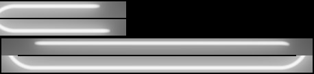
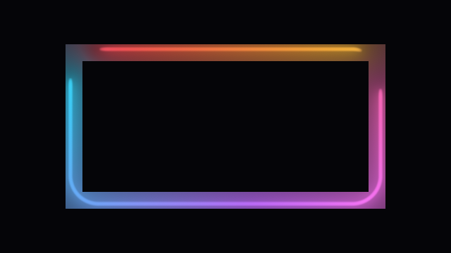

NeonRenderer · one frame, pass by pass
What each neon shader draws
One frame of a 440 × 220 rect in a 640 × 360 frame at resolution scale 0.5 - the default - read back between the renderer’s draws: every program’s own output, at the resolution it actually runs - and why each of the ten programs exists. There is one path at every scale: at 1.0 the reduced buffer is simply full size.
The scene has something in every buffer: an arc over t 0 to 0.6 on the base gradient, a dimmer arc (intensity 0.6, its own orange-to-red stops) over 0.65 to 0.95, dark gaps between them, and a segment at 0.3. The images are the ones Part 6 of the onboarding guide uses; tools/neon-guide-figures renders them.
LazyBake::Decide). Phase 1 fills the offscreen buffers, each only when stale: P0 when an input of the table moved, P0b for the pieces a change reaches (never while the ring is lit uniformly), P1a when something it reads moved; on a frame where nothing moved none of them runs, nor the reduced buffer’s step. P0b’s table is read by every neon.frag pass and bake. With no segments, P1f and P1r bake the hue-free brightness of the glow and of the ring once a config has held - the glow’s only under a rotating hue or a moving intensity. The reduced buffer is then written by P1b, shading it, or by P1c from the glow’s field. Phase 2 composites onto the caller’s framebuffer: the fill, the blit over everything except a band round the outline, and the ring over exactly that band - drawn by P2c, shading it at full resolution from the gather buffer and P0b’s table, or by P2r from the ring’s field, on every frame that field holds, still frames included. At scale 1.0 all of this runs the same way, with a full-size reduced buffer. Uniforms, LUTs and uniform blocks are left out. The field captures (P1f, P1r) come from the same scene without its segment, since a segment keeps both fields off. Sizes are this page’s 640 × 360 frame; the gather captures are magnified, so their texels show.In frame order
Everything the sample loop needs that does not depend on the pixel, baked once per perimeter sample. Each sample is one column, drawn 5 px wide, with t = 0 at the left. Top to bottom:
- Row 0 colour: arc colour × arc weight.
- Row 0 alpha: the arc weight. 1 on the first arc, 0.6 on the dimmer one, 0 in the gaps.
- Row 1 colour: segment colour × bell.
- Row 1 alpha: the bell, scaled to its peak.

For each of the outline’s eight pieces, how lit that piece is as the halo and the bloom see it from any fragment position round it: the piece’s own coverage over its own extent, weighted by each layer’s kernel - in closed form for the arcs, integrated numerically for the segments’ bells. Each of four bands holds a straight at its left (the projection along it across, past both ends at the sides; the distance from the line down) and a corner at its right (the direction from the arc’s centre across, the distance from it down, the arc itself halfway), the two sharing the band’s columns in proportion to their lengths. The halo and bloom are a sum over those pieces, and every shading pass and field bake - P1b, P2c, P1r and P1f - scales each piece’s share by its own read of this table, one linear fetch per piece. Never re-baked on time, and on a change only the pieces it reaches: each texel integrates the lights over its own piece alone, so a segment that moved re-bakes the pieces its old and new bells touch, and an arc that only moved - a wipe, a travelling arc - just the bands its two ends swept (I42, I54), texel for texel what a full bake writes. Its lengths enter only as ratios, so every resolution scale shares it. Its width is the rect’s and the halo’s (GetGlowCoverWidth, I59): 320 columns for this page’s rect, where it was 1024 for every rect. And this scene’s segment is not baked here at all: a bell is many times wider than an arc’s feather, so the segments are baked into a 128-column table of their own (P0s, the same program with uBakeTarget 1) and copied into this one’s b / a by a fill pass (P0f, neon-glow-cover-fill.frag), each texel decoded through this table’s layout and fetched through the segment table’s (I60). Panels 3 and 4 are that copy.
- The arcs as the halo sees them: each straight’s own stretch of the arcs sharp at the top of its band, softening down it as the kernel widens; beside it, a corner.
- The arcs as the bloom sees them, six times wider, so even on the line the gaps are only a shade darker.
- The segment at
t= 0.3 as the halo sees it - only on the pieces it reaches. - The same segment as the bloom sees it.

The sample loop, about 95% of the neon’s cost, run once per texel of a coarse grid: about two texels per colour-kernel width. Its results vary slowly enough that the later passes read them back with a bilinear fetch. It reads only the emission table, the sample positions, the rect’s shape and whether there are segments, so it is skipped on any frame that moved none of them - including a config change that moves only the glow’s reach (an intensity or bloom pulse, a glow-radius or cutoff sweep), which moves the gather’s quad but none of its texels: the quad settles on the widest one the animation reaches and every reader reads the buffer through the region it was drawn over (I55). Shown 4× with nearest-neighbour scaling, so the texels stay visible.


c/(1+c). Darker where the outline nearby is dim or dark.
With no segments, everything pass 1b computes is the gathered hue times a brightness that does not depend on it: tonemap(col × Fa) - the blit applies the cut and the cutoffs afterwards. Only col moves when the hue rotates. So this pass runs pass 1b’s shading once with the hue fixed at 1 and stores Fa, the brightness before the tone map, in one half-float channel, on the reduced buffer’s own region and grid. Offscreen, unblended. A frame where nothing moved reuses pass 1b’s buffer already, so the field is built only for the frames that would redraw it with nothing else moved: the hue’s, and an intensity animation’s. The intensity is the one config change that does not throw the field away (I56): the output is near enough intensity × a brightness that does not move, so a field baked at I0 serves a dimmer intensity scaled by I / I0 while it moves, is baked again when it climbs past I0, and baked exactly on the frame it stops - up to 2 levels off on the default look while it moves (6 on a 1.5 bloom over a 0.4-1.0 pulse), nothing once it holds. After any other config change it waits until the config has held for a frame, so an animation that changes the config every frame never pays for a bake it cannot reuse; only the first frame a config the field can serve is drawn bakes at once, alongside P1b, because this driver finishes compiling a program on its first draw and a bake left for the next frame stalled it ~125 ms. The same program also bakes the ring’s field (P1r). Captured on this scene without its segment, since segments keep the field off, with the hue rotating.

Fa, shown through the tone map: the glow’s brightness in white light. The colour is added by P1c. Shown 2× with nearest-neighbour scaling.Everything except the loop and the line, shaded at half resolution from the gather buffer. The glow holds up at this size; the line would come out blocky, and since the edge ring re-shades every pixel it reaches at full resolution, this pass does not compute it at all (D4 of the glow-cover plan) - the frame is the same bits. Shown 2× with nearest-neighbour scaling.

P1b’s picture from P1f’s field: each texel reads its field texel and the gathered hue, multiplies, and tone-maps with the same function neon.frag uses (neonToneMap). Two fetches and a tone map instead of the whole shading, written into the reduced buffer, unblended, in P1b’s place; the blit and the ring carry on as before. Within 1/255 of P1b on a hue frame: 1.55x on those frames at 0.5, 1.98x at 0.75 (I50). During an intensity animation it multiplies the field by I / I0 first (uFieldGain, exactly 1 otherwise): intensity-pulse frames 2.31x at 0.5, 1.60x at 0.25 (I56, Apple M2 Pro).

P2c is a full-resolution cost the scale does not shrink, paid on every frame. With no segments its output is mask × tonemap(col × Fa) - the same factorisation as P1f’s, the mask being the one-sided cut and the cutoffs, which depend on the pixel’s position alone - so this pass bakes Fa over the ring once, with the ring’s own uniforms (scale 1.0, its own fade margin and corner skip). The ring is an axis-aligned annulus, a box minus a hole, so its pixels are four strips: the bottom and the top stored as they are, the left and the right transposed above them so each runs along the buffer’s width (RingFieldLayout). One draw per strip, each through its own rows as the viewport; every texel sits on one of the viewport’s pixels. About 0.27 MB for a 960 × 540 rect at 1080p, against 1.06 MB as a plain box. It keeps P1f’s schedule (LazyBake, its own instance) - but needs no rotating hue, since the ring is redrawn on still frames too.

Fa over the ring, through the tone map as for P1f: the bottom strip at the bottom, the top above it, the two sides transposed above those.The reduced buffer upsampled onto the frame, everywhere the glow can reach except a thin ring around the outline. It also draws the one-sided cut and the cutoff edges at full resolution, and dithers its colour by ± half an 8-bit level so the glow’s slow tails do not round into contour rings (R7) - as the ring does. The black band is the ring’s area, still empty.

The same source as P1b, with its uniforms uploaded as if the scale were 1.0. It reshades the band where the line and every hard edge live, reading the gather buffer for colour and coverage, and - since it shades with scale-1.0 uniforms - multiplies the one-sided cut and the cutoffs in after its tone map itself. Its strips share their edges with the blit’s, so no pixel is drawn twice. It draws onto the caller’s framebuffer, so nothing of it survives a frame: on a config with segments it runs on every frame, still frames included. Without segments it runs only until the ring’s field holds, and P2r draws the band instead.


P2c’s picture from P1r’s field, through the blit’s matrix so the partition still holds. Each fragment finds its pixel in the ring’s box, its strip against a conservative hole, and its texel; multiplies by the gathered hue; tone-maps; and then multiplies in the one-sided cut and the cutoffs from its own distance to the edge - the terms the ring’s shading applies after its tone map, copied from neon.frag and fed the same uniforms. Within 1/255 of P2c. Its own program object, not P1c’s: it draws the caller’s framebuffer blended in the frame P1c may draw the reduced buffer unblended. 1.4-1.9x on still frames and 1.2-1.6x on hue frames (I52, AMD Radeon Pro 5300M); a one-sided glow or a cutoff used to keep the ring shading directly, and taking them here made those configs’ still frames 1.2-2.7x faster (I53, Apple M2 Pro).

Why each program exists
Ten programs, one job each
Every program is built on the first frame that needs it, so a host compiles only its own: with segments, five (P0, P1a, P1b, the blit and the ring’s P2c), plus the fill with an opaque mode; without them, nine - the field’s two, built together, and the ring’s composite P2r on top. A partly lit ring adds P0b to either, and P0f when it has segments long enough for a table of their own. Each row says what the program is for and why it is not folded into another.
| Program | What it is for | Why it is its own program |
|---|---|---|
P0 mEmissionShader |
Each perimeter sample’s colour, arc weight and segment bells, once per frame for 128 samples. | That work depends only on the sample, the time and the config. Done here, the gather’s cost per texel is O(samples) instead of O(samples × (arcs + segments)). Runs only when an input moves. |
P0b mGlowCoverShader |
How lit each of the outline’s eight pieces is, as the halo and the bloom see it - only for a partly lit ring. | Closed-form integrals per arc and a 16-point quadrature per segment over a 256-1024 × 128 table - and, as P0s, the segments alone over a narrower table of their own. Evaluated per pixel in neon.frag instead, a partly lit ring measured 2.0x / 3.3x slower at scale 1.0 / 0.5; too much for the CPU when a segment moves every frame. |
P0f mGlowCoverFillShader |
Copies the segment table into the coverage table’s b / a, so neon.frag reads one texel per piece and never knows the segment table exists. |
A decode and one fetch per texel, no integrals. Read in neon.frag instead, the second table would add eight fetches and eight forward maps to every shading pass on every frame of a segment config; as its own pass it costs only the frames a segment moves. |
P1a mGatherShader |
The sample loop - the colour of the ring near each point and how lit it is. | The loop was ~95% of the neon’s cost when every pixel ran it. Its results are smooth, so it runs on a coarse grid (about two texels per colour-kernel width) and is read back bilinearly: 2-4x on a large quad. |
P1b mShadeShader |
The glow at the reduced scale. | The same source as the ring, compiled twice so each program draws one target in one blend state a frame: one program drawing an offscreen buffer unblended and the framebuffer blended in the same frame measured 93-624x slower on the AMD macOS driver. |
P2c mRingShader |
The full-resolution shading of the edge ring, where the line and every hard edge live. | The only program that draws the filament and the hard edges at full resolution; every other glow pass reads a buffer or draws offscreen. |
P2b mBlitShader |
The reduced buffer upsampled onto the frame outside the ring. | It also applies the one-sided cut and the cutoffs at destination resolution: drawn inside the reduced buffer, a mask is smeared over 1/scale pixels by the upsample (59/255 on the dark side of a cut at 0.5, measured). |
P1f / P1r mFieldBakeShader |
The hue-invariant field: the brightness with the hue fixed at 1, before the tone map - for a config without segments, on its first frame and once it has held after a change, kept through an intensity animation. The glow’s (P1f, with the hue rotating or the intensity moving) and the ring’s (P1r, on still frames too). | See below - the field is the cheap path for hue and intensity frames and for the ring, and the bake cannot share a program with the passes it replaces. |
P1c mFieldCompositeShader |
The field times the gathered hue - and I / I0 while the intensity moves - tone-mapped, into the reduced buffer in P1b’s place while the field holds. | Two fetches and a tone map a texel, where P1b runs the whole shading - the field’s saving lives here. |
P2r mRingFieldCompositeShader |
The ring’s field times the gathered hue, tone-mapped, times the one-sided cut and the cutoffs, in P2c’s place - still frames included. | The ring is redrawn on every frame at full resolution; this is the cheap way to redraw it. Not P1c’s program: it draws the caller’s framebuffer blended in the frame P1c may draw the reduced buffer unblended, and it carries the strip lookup and the masks P1c does not. |
P2a mFillShader |
The opaque fill under the glow, only with an opaque mode. | Its own shape and its own cutoffs, always at full resolution; usually a scissored clear stands in, and the program is compiled only the first time a fill needs it. |
Why the field bake is necessary
The fields are what make a moving frame cheap. Without P1f there is nothing for P1c to read, and every hue-rotating frame - the library’s default - reruns pass 1b’s whole shading; without P1r, the ring is shaded in full on every frame, still ones included. Measured on the AMD Radeon Pro 5300M: the glow’s field 1.98x on hue frames at 0.75, 1.55x at 0.5, 1.21x at 0.25 (I50, twelve scenes); the ring’s 1.4-1.9x on still frames and 1.2-1.6x on hue frames (I52). And on an Apple M2 Pro the glow’s field carries an intensity animation, scaled, where it used to be thrown away on every frame: 2.31x on intensity-pulse frames at 0.5 (I56). (Before I57 the same field stood in for a direct pass 1 at scale 1.0, where it measured 4x with the hue rotating and 9x still - I46.)
It cannot be the ring’s program. Three things separate it, and each is a reason:
- A different output. It writes the brightness
Fabefore the tone map - one half-float channel - where every otherneon.fragprogram writes a finished, premultiplied colour. As a compile-time define (NEON_FIELD_BAKE) that difference costs the hot shading program nothing; as a runtime switch it would add branches to the program every animated frame runs, and this compiler has slowed that program for code no frame executes. - A different target and blend state. It draws an offscreen buffer, unblended; the ring’s program draws the caller’s framebuffer, blended. One program doing both is the shape that measured 93-624x slower on the AMD macOS driver - the reason P1b and the ring are already two programs.
- It costs only where it pays. Built on the first frame of a config a field can serve, never for a config with segments; the glow’s field is not allocated without a rotating hue or a moving intensity, nor for a thin band it is not worth its memory for (
FIELD_MIN_FILL) - the ring’s, a few strips of full-resolution pixels, is, since the ring is redrawn on every frame. A host that only draws segment configs never compiles either.
The alternatives were weighed: baking with the ring’s program behind a uniform would save one compile on the first settled frame at the price of reasons 1 and 2, and baking with P1b’s program would draw two targets in two blend states with it in one frame. What the field must keep is an invariant of neon.frag: anything new there that reads the hue other than linearly, reads time, or multiplies after the tone map on a config the field takes breaks the factorisation, and has to extend NEON_FIELD_BAKE and neon-field.frag together.